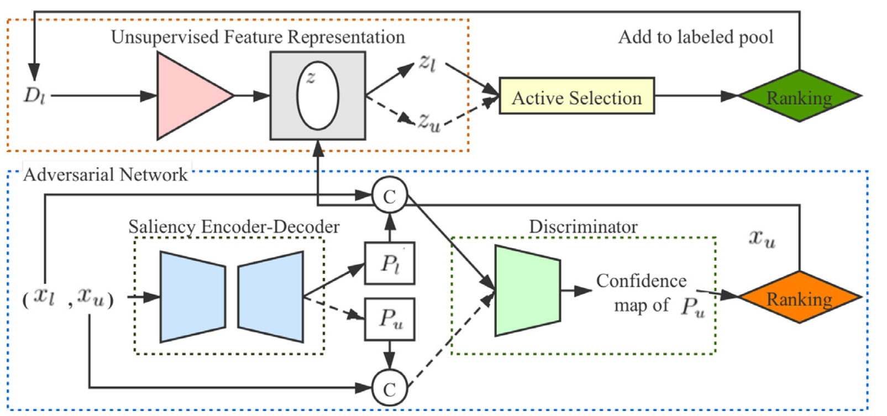
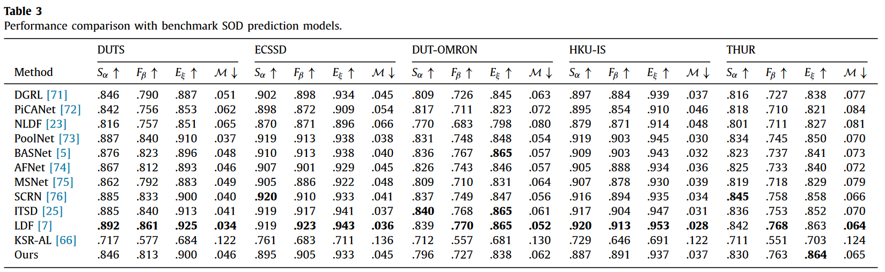
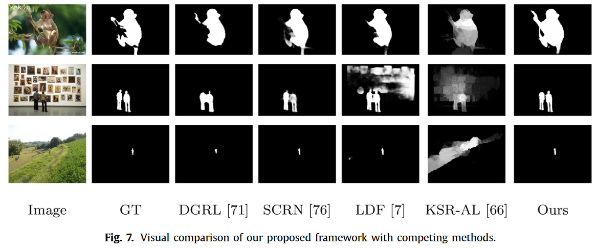

<!DOCTYPE html>
<html lang="en">

<head>
  <meta charset="UTF-8">
  <meta http-equiv="X-UA-Compatible" content="IE=edge">
  <meta name="viewport" content="width=device-width, initial-scale=1">
  <title>Semi-supervised Active Salient Object Detection</title>
  <!-- Bootstrap -->
  <link href="css/bootstrap-4.4.1.css" rel="stylesheet">
  <link rel="stylesheet" href="https://cdnjs.cloudflare.com/ajax/libs/font-awesome/4.7.0/css/font-awesome.min.css">
</head>

<!-- cover -->
<section>
  <div class="jumbotron text-center mt-0">
    <div class="container">
      <div class="row">
        <div class="col-12">
          <h2>Semi-supervised Active Salient Object Detection</h2>
          <h4 style="color:#5a6268;">Pattern Recognition</h4>
          <hr>
          <h6>
            <a href="http://npu-cvr.cn/" target="_blank">Yunqiu Lv</a><sup>1*</sup>,
            <a href="http://npu-cvr.cn/" target="_blank">Bowen Liu</a><sup>1*</sup>,
            <a href="http://npu-cvr.cn/" target="_blank">Jing Zhang</a><sup>2</sup>,
            <a href="http://npu-cvr.cn/" target="_blank">Yuchao Dai</a><sup>1</sup>
            <a href="http://npu-cvr.cn/" target="_blank">Aixuan Li</a><sup>1</sup>,
            <a href="http://npu-cvr.cn/" target="_blank">Tong Zhang</a><sup>3</sup>,
          </h6>
          <p><sup>1</sup>Northwestern Polytechnical University, China &nbsp;&nbsp;
            <sup>2</sup>Australian National University, Australia
            <sup>3</sup>EPFL, Switzerland
            <br>
            <sup>*</sup> denotes equal contribution
          </p>


          <div class="row justify-content-center">
            <div class="column">
              <p class="mb-5"><a class="btn btn-large btn-light" href="https://www.sciencedirect.com/science/article/pii/S0031320321005446" role="button"
                  target="_blank">
                  <i class="fa fa-file"></i> Paper</a> </p>
            </div>
            <div class="column">
              <p class="mb-5"><a class="btn btn-large btn-light" href="https://github.com/JingZhang617/Semi-Sal" role="button" target="_blank">
                  <i class="fa fa-github-alt"></i> Code </a> </p>
            </div>
            <!-- <div class="column">
              <p class="mb-5"><a class="btn btn-large btn-light" href="https://openaccess.thecvf.com/content/CVPR2021/supplemental/Li_Uncertainty-Aware_Joint_Salient_CVPR_2021_supplemental.zip" role="button">
                  <i class="fa fa-file"></i> Supplementary </a> </p>
            </div> -->
            <!-- <div class="column">
              <p class="mb-5"><a class="btn btn-large btn-light" href="" role="button">
                  <i class="fa fa-database"></i> Data</a> </p>
            </div> -->
          </div>
        </div>
      </div>
    </div>
  </div>
</section>


<!-- abstract -->
<section>
  <div class="container">
    <div class="row">
      <div class="col-12 text-center">
        <h3>Abstract</h3>
        <hr style="margin-top:0px">
        <p class="text-left"> In this paper, we propose a novel semi-supervised active salient object detection (SOD) method that actively acquires a small subset of the most discriminative and representative samples for labeling. Two main contributions have been made to prevent the method from being overwhelmed by labeling similar distributed samples. First, we design a saliency encoder-decoder with adversarial discriminator to generate a confidence map, representing the network uncertainty on the current prediction. Then, we select the least confident (discriminative) samples from the unlabeled pool to form the “candidate labeled pool”. Second, we train a Variational Auto-Encoder (VAE) to select and add the most representative data from the “candidate labeled pool” into the labeled pool by comparing their corresponding features in the latent space. Within our framework, these two networks are optimized conditioned on the states of each other progressively. Experimental results on six benchmarking SOD datasets demonstrate that our annotationefficient learning based salient object detection method, reaching to 14% labeling budget, can be on par with the state-of-the-art fully-supervised deep SOD models.</p>
      </div>
    </div>
  </div>
</section>
<br>


<!-- showcase -->
<section>
  <div class="container">
    <div class="row">
      <div class="col-12 text-center">
        <h3>Network Architecture</h3>
        <hr style="margin-top:0px">
        
        <p> Overall architecture of our framework. Both labeled image $x_l$ and unlabeled image $x_u$ are fed to the “Adversarial Network” to obtain saliency map $P_l$ and $P_u$ respectively. The fully convolutional saliency discriminator (green block) takes the concatenation of image and Pu and outputs a confidence map representing the uncertainty of the prediction. Only labeled image set $D_l$ and confident samples are fed to the “Unsupervised Feature Representation” for feature extraction. We select samples that are most different from $D_l$ and add them to $D_l$.  
             </p>
      </div>
    </div>
  </div>
</section>
<br>


<!-- comparison -->
<section>
  <div class="container">
    <div class="row">
      <div class="col-12 text-center">
        <h3>Performance comparison with benchmark saliency detection models.</h3>
        <hr style="margin-top:0px">
        
      </div>
    </div>
  </div>
</section>
<br>


<!-- comparison -->
<section>
  <div class="container">
    <div class="row">
      <div class="col-12 text-center">
        <h3>Predictions of competing salient object detection models and ours.</h3>
        <hr style="margin-top:0px">
        
      </div>
    </div>
  </div>
</section>
<br>


<!-- citing -->
<div class="container">
  <div class="row ">
    <div class="col-12">
      <h3>Citation</h3>
      <hr style="margin-top:0px">
      <pre style="background-color: #e9eeef;padding: 1.25em 1.5em">
<code>@article{lv2022semi,
  title={Semi-supervised active salient object detection},
  author={Lv, Yunqiu and Liu, Bowen and Zhang, Jing and Dai, Yuchao and Li, Aixuan and Zhang, Tong},
  journal={Pattern Recognition},
  volume={123},
  pages={108364},
  year={2022},
  publisher={Elsevier}
}
</code></pre>
      <hr>
    </div>
  </div>
</div>

<footer class="text-center" style="margin-bottom:10px">
  <br>
  Thanks to <a href="https://lioryariv.github.io/" target="_blank">Lior Yariv</a> for the website template.
</footer>

</body>

</html>
